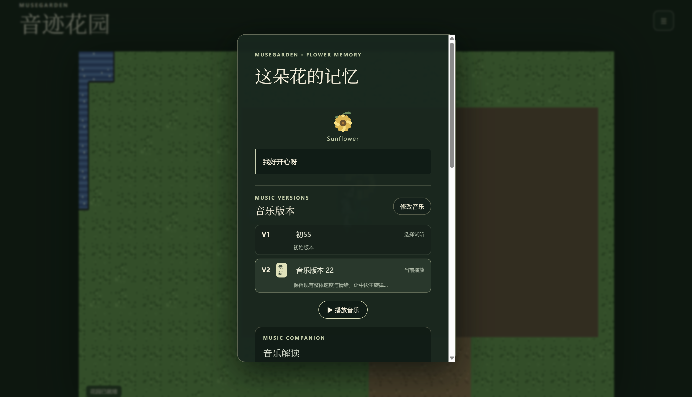

文字创作
用一段自然语言记录当下的回忆或情绪，降低音乐创作门槛。
把一段文字记忆变成音乐与花朵，让情绪在可以探索的像素花园中留下位置。
MuseGarden 是一个本地运行的 AI 音乐记忆应用。用户在花园中选择空地、输入文字，系统分析文字情绪并生成音乐和像素花朵；随后可在花园中回顾、播放、修改和管理这段音乐记忆。
用一段自然语言记录当下的回忆或情绪，降低音乐创作门槛。
系统生成音乐、花朵和种植记录，将抽象情绪放入花园空间。
查看音乐解读、采用 AI 修改建议、保留并切换历史版本。



qwen2.5:3b，ACE-Step 可启动音乐生成服务。启动 MuseGarden.bat。http://127.0.0.1:5182/。详细环境要求、操作方法与故障排查请见 运行与使用说明。